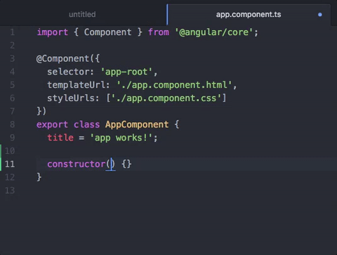
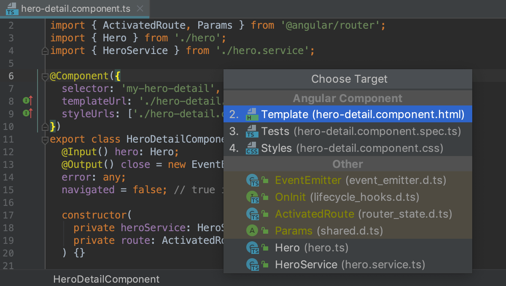
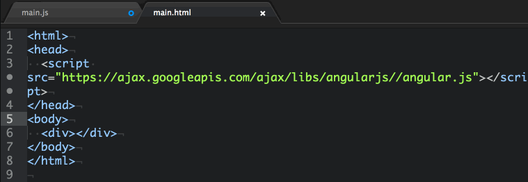
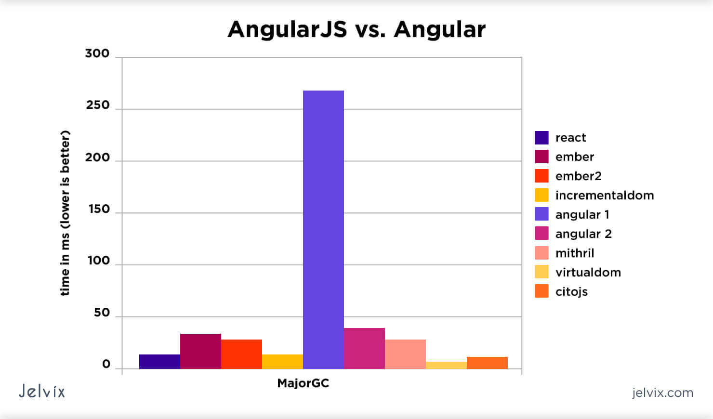
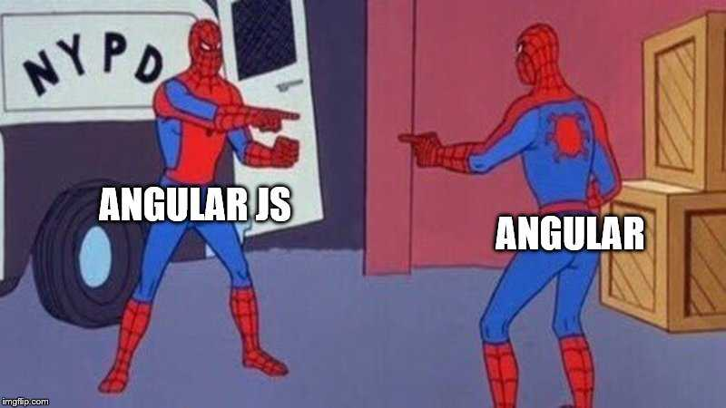
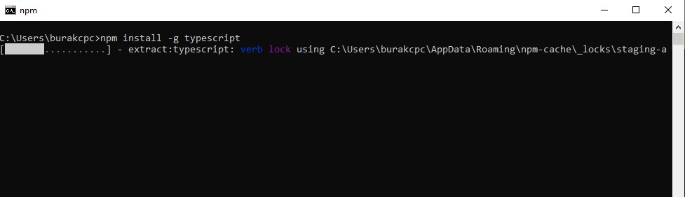

Angular, PWA altyapılı TypeScript üzerine inşa edilmiş bir geliştirme platformudur. Tek geliştiricili projelerden kurumsal düzeyde uygulamalara kadar ölçeklendirilebilen Angular şunları içerir:
-Ölçeklenebilir web uygulamaları oluşturmak için bileşen tabanlı bir çerçeve,
-Yönlendirme, form yönetimi, istemci-sunucu iletişimi ve daha fazlası dahil olmak üzere çok çeşitli özellikleri kapsayan iyi birleştirilmiş kitaplıklardan oluşan bir koleksiyon,
-Kodunuzu geliştirmeye, oluşturmaya, test etmeye ve güncelleştirmeye yardımcı olacak bir dizi geliştirici araçtır


Angular JS Nedir?
Angular JS web tarayıcısı üzerinde çalışan, uygulamaları geliştirmek için kullanılan bir JavaScript kütüphanesidir.
Angular JS, uygulama geliştirmenize en uygun çerçeveyi oluşturabilmek için bir araç setidir. Tamamen genişletilebilir ve diğer kütüphanelerle iyi çalışır. Her özellik, benzersiz geliştirme iş akışına ve özellik gereksinimlerine uyacak şekilde değiştirilebilir. Peki Angular ve Angular JS arasındaki fark nedir?
Angular JS 2010 yılında Google tarafından yayımlanmış proje olmakla beraber kullanımı arttıkça eksikleri fark edilip yeni bir versiyona ihtiyaç duyan bir projedir. Bu doğrultuda Google yeni bir versiyon olan Angular framework’ünü yayınlamıştır.


Angular
Google tarafından web uygulamaları geliştirmek için oluşturulmuş popüler bir açık kaynaklı TypeScript çerçevesidir. Ön uç geliştiriciler, verileri verimli bir şekilde sunmak ve işlemek için Angular veya React gibi çerçeveler kullanır. Güncellenen Angular, Angular'ın eski sürümüne göre çok daha verimli, özellikle çekirdek işlevsellik farklı modüllere taşındı. Bu yüzden eskisine göre çok daha hızlı ve pürüzsüz oluyor. Yeni eklenen açısal CLI ve bu komut satırı arayüzünün yardımıyla, oluşturmayı kolaylaştıran gerekli paketleri kurabilir ve karmaşık yapılı kodu yönetmesi kolay modüler forma dönüştürebiliriz.

Angular JS
AngularJs, çoğunlukla tek sayfalı web uygulamaları (SPA) geliştirmek için kullanılan bir Javascript açık kaynaklı ön uç çerçevesidir. Web uygulamaları geliştirmek için daha iyi yollar sağlayan, sürekli büyüyen ve genişleyen bir çerçevedir. Statik HTML'yi dinamik HTML'ye değiştirir. Dinamik bağlama ve bağımlılık ekleme gibi özellikleri, aksi takdirde yazmamız gereken kod ihtiyacını ortadan kaldırır. AngularJ'ler hızla büyüyor ve bu nedenle AngularJ'lerin en son kararlı sürümü 1.7.7 olan farklı sürümlerimiz var. Angular'ın AngularJ'lerden farklı olduğunu not etmek de önemlidir.
Angular Kurulumu
1) NodeJS İndirme ve Kurulumu;
- NodeJS JavaScript komutlarının server tarafında işlenmesini sağlayan bir uygulamadır.
Kurulum tamamlandıktan sonra node –v komutuyla versiyon kontrolü yapılabilir.
Eğer bir sorun hata ile karşılaştıysanız https://github.com/nodejs/help/issues sitesinde soruna çözüm arayabilirsiniz.
2) TypeScript Compiler İndirme ve Kurulumu;
- NodeJS, TypeScript Compiler’ını kurma ve TypeScript Compiler’ın yazmış olduğu kodları JavaScript kodlarına dönüşmesinde görev alır.
Terminal ekranına npm install –g typescript komutu yazılır ve böylelikle TypeScript ile geliştirme yapılması için ortam hazır hale gelir.

3) Angular CLI ( Angular Command Line Interface ) İndirme ve Kurulumu;
- Terminal ekranına npm install –g @angular/cli komutu girilir.
Daha sonrasında ng new AngularProje komutu girilir ve projenin oluştuğu görülür. Angular projesinin çalışması içinse ng serve –open komutu girilir. Böylelikle uygulama çalışmış ve kullanıma hazır halde olucaktır.